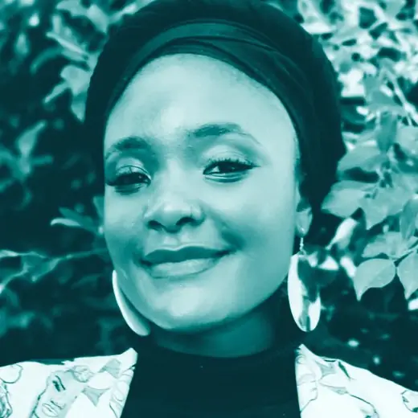

Charity Monareng
Chairperson · Member since 2021
Charity Monareng is a public-law scholar, drug-policy reform advocate, and non-profit leader with a distinguished track record in harm reduction, human rights, and evidence-based policy development at national, regional, and international levels.
She is completing her PhD in Public Law at the University of Cape Town (expected 2027), and has been active in the drug-policy field since 2018, representing South Africa at the United Nations Commission on Narcotic Drugs (CND) in Vienna, engaging international harm-reduction platforms, and leading reform initiatives focused on youth, gender, and marginalised communities. As Executive Director of Students for Sensible Drug Policy International, she leads organisational strategy across a global network.
Charity brings to STAND's governance the policy-architecture expertise and international network that STAND's work requires.
Current position: Executive Director, Students for Sensible Drug Policy International.
Credentials: PhD in Public Law (in progress, expected 2027), University of Cape Town; Honours in Social Development, UCT; BA in Criminology and International Studies, Monash South Africa.